IN PLAIN SIGHT
Hobart Women's Shelter-A Modular System
This project addresses the pressing issue of women's homelessness in Hobart by proposing a modular housing system. With Hobart's rising rates of homelessness among women, there is an urgent need for more short-term, affordable housing. The proposed modular system offers an efficient solution, creating homes that blend seamlessly into the urban landscape while providing women and children with safe, comfortable, and supportive living spaces.
Design Principle
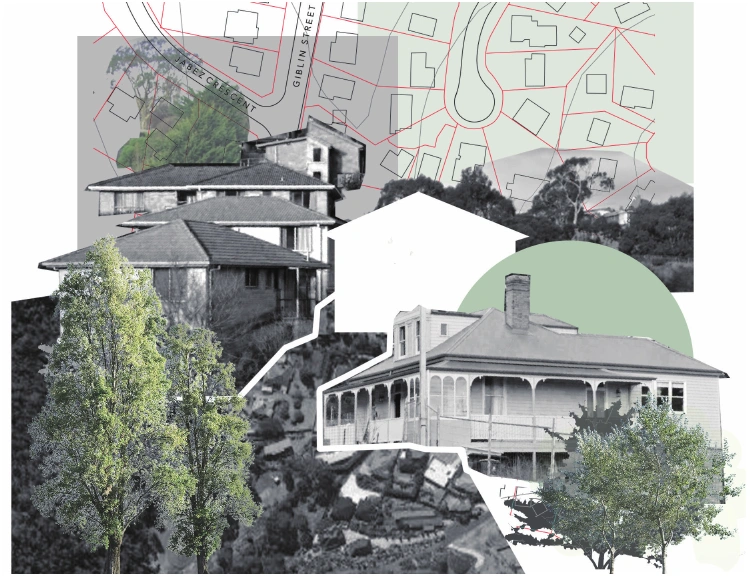
The living units are arranged into dwellings that seamlessly integrate with the surrounding urban fabric. Each unit is designed to be similar yet slightly distinct, ensuring the safety of women while fostering a sense of independence and individuality.
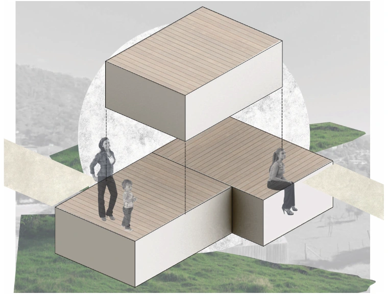
Pre-fabricated modules are designed for quick and flexible installation to address the high rate of unmet needs. These modules follow a straightforward and efficient design logic, allowing them to form diverse dwellings that adapt seamlessly to various urban contexts.
Estimating Homelessness
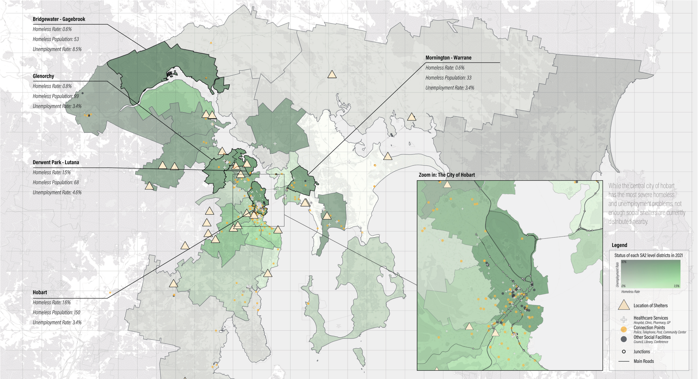
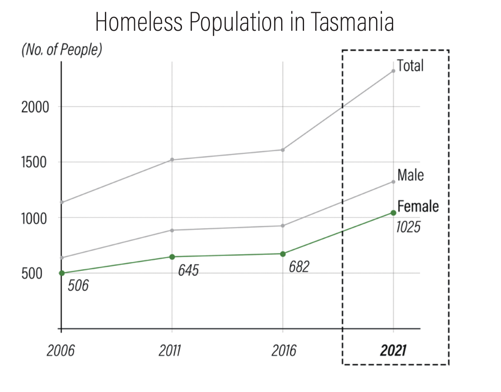
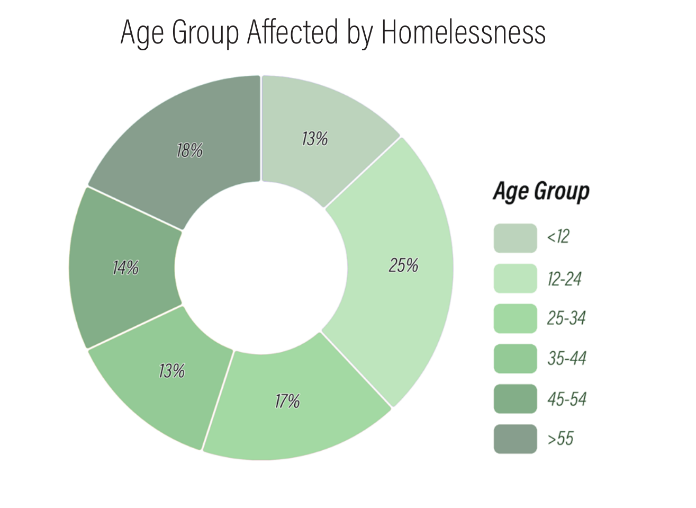
The Rate of Unmet Need
In 2020-21, the unmet need for short-term or emergency accommodation averaged 46 cases per day, where individuals at risk of or experiencing homelessness sought assistance but were unable to receive it.
Over 40% of these reported cases were linked to domestic violence, with women and children making up the majority of victims
Modular Design & Construction with CLT (Cross-laminated timber)
To ensure adaptability and efficiency, the houses are designed as pre-fabricated modules that seamlessly integrate into various urban contexts. Cross-laminated timber is chosen as the primary material due to its affordability, ease of construction, aesthetic appeal, and environmental benefits.
Below is a 5-step guide to creating a single dwelling using this modular system.
Iterations in Different Contexts
Modules can be stacked in various configurations to adapt to the surrounding context, allowing the living units to "hide in plain sight." Test sites across different areas of Hobart were used to ensure adaptability to diverse urban environments.
Site Fitting: A New Community on Giblin St.
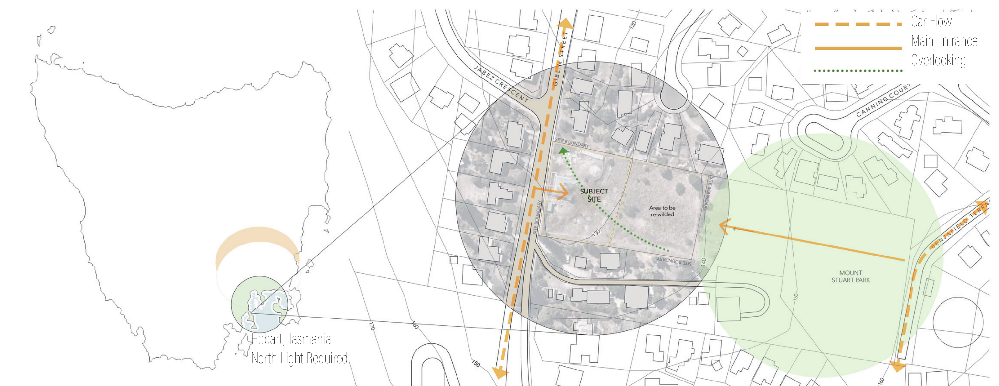
This site on Giblin Street is situated in an open space between the street and a hillside park. Based on the criteria provided by Hobart Women’s Shelter, the site scores 17 out of 20 points for accessibility to mandatory facilities and an additional 5 points for other nearby amenities.
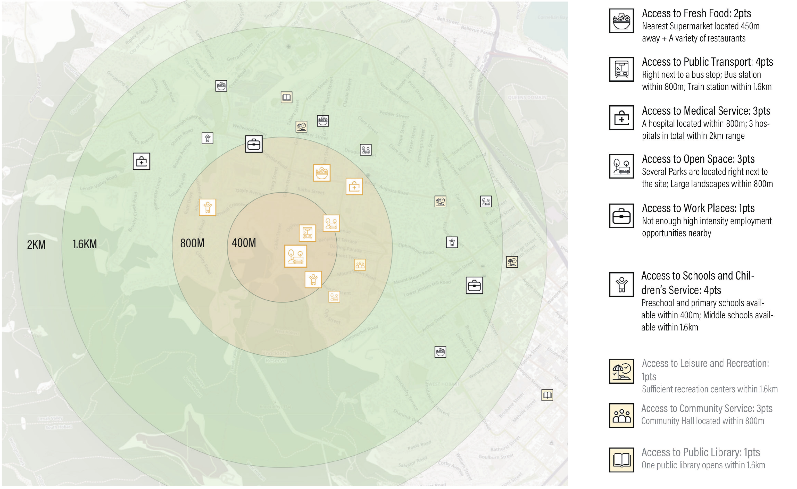
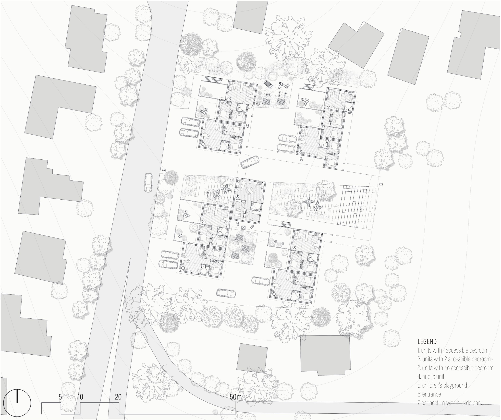
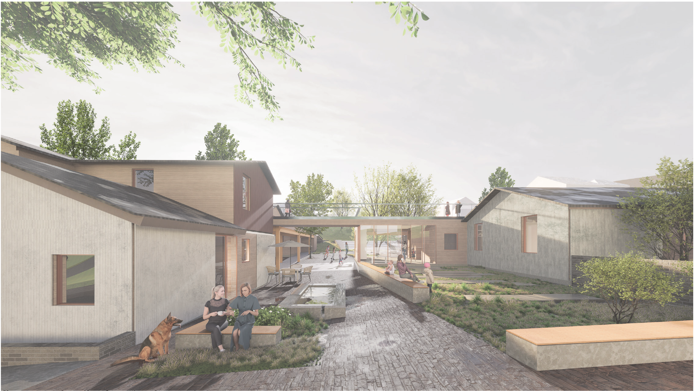
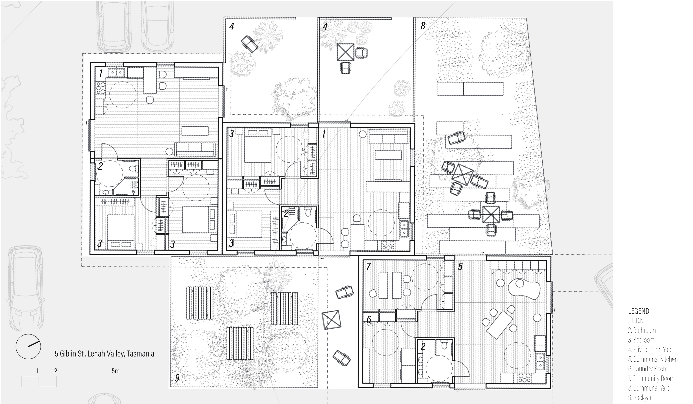
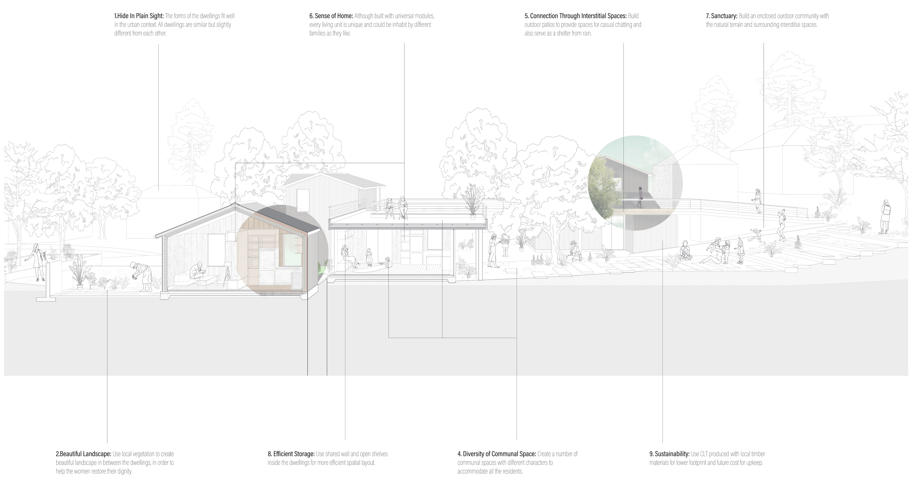
Working Models
Using small wooden blocks on the site model, I developed the site planning and dwelling distribution layout. Subsequently, I built 1:50 scale models with wooden materials to simulate the stacking of various living units.
Model Images